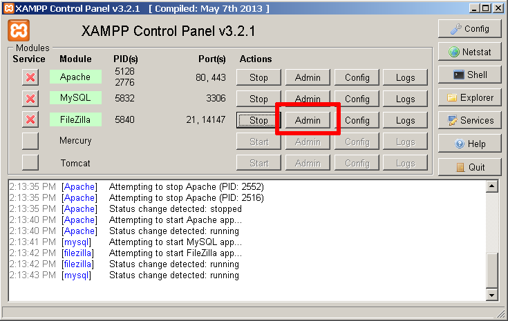
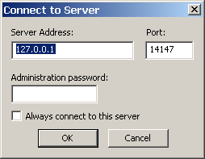
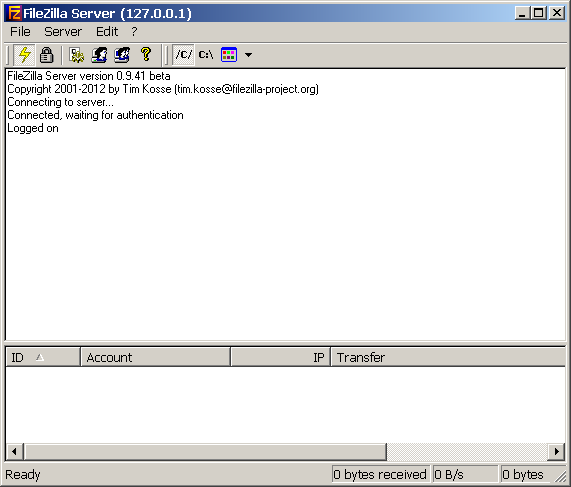
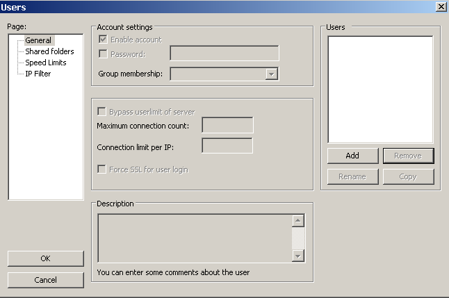
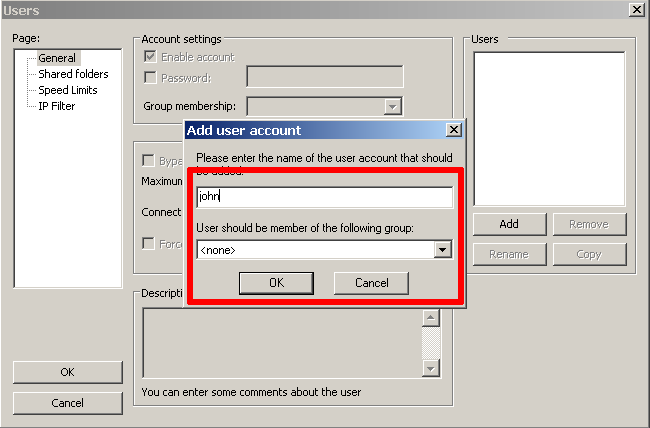
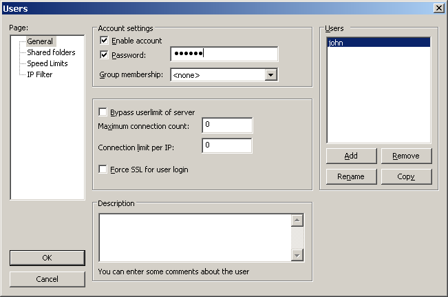
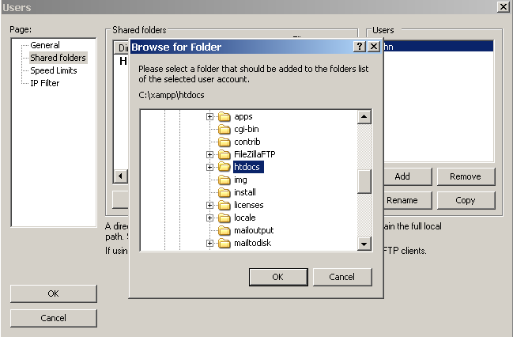
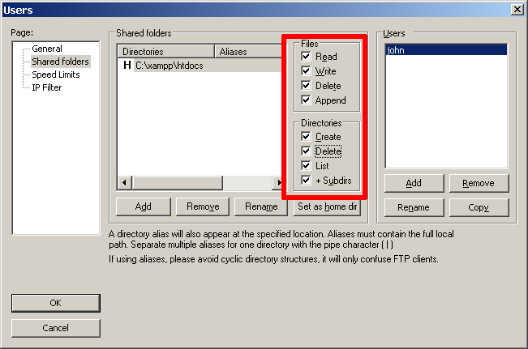
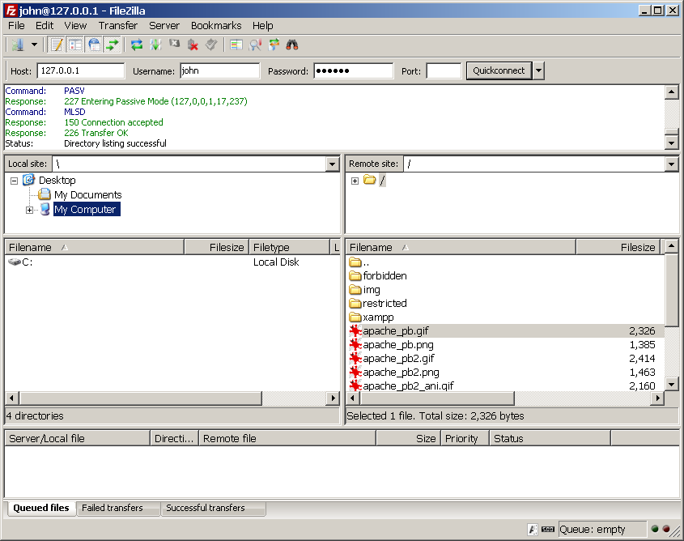
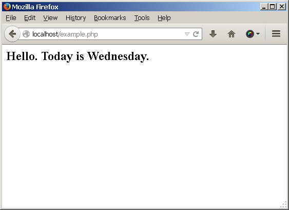

Configure FTP Access
XAMPP includes the server version of FileZilla, an open-source FTP solution. This makes it easy to transfer files to and from a XAMPP environment using FTP.
To illustrate, assume that you have a simple PHP script named example.php on your Windows desktop containing the following code, that you wish to transfer to the XAMPP server.
<!-- example.php -->
<html>
<head></head>
<body>
<h2><?php echo "Hello. Today is " . date('l'); ?>.</h2>
</body>
</html>
To transfer files using FTP, you must first configure the FileZilla FTP server. Follow the steps below.
-
Ensure that FileZilla is running.
-
Start the FileZilla administration interface by clicking the "Admin" button in the XAMPP control panel.
 -
In the resulting "Connect to Server" dialog box, leave all values at their default values and click "OK".
You should now arrive at the FileZilla server console.
 -
You now need to set up at least one FTP user. To do this, click the "Edit → Users" menu item. This will bring you to the user management interface.
 -
Click the "Add" button to add a new user account. Enter a name for the new user account.
 -
Select and check the "Password" field and enter a password for the new user.
 -
Next, you need to define which folders the user has access to. To do this, click the "Shared folder" sub-item in the left navigation menu.
-
Click the "Add" button and select the htdocs\ subdirectory of the XAMPP installation directory as the user’s home directory.
 -
Grant the user all available rights to this directory.
 -
Click "OK" to save your changes.
-
Use the "File → Quit" menu item to disconnect from the FileZilla administration interface.
You can now transfer files to the XAMPP server by following the steps below:
-
Launch your FTP client and enter connection details as below.
-
If you’re connecting to the server from the same system, use "127.0.0.1" as the host address. If you’re connecting from a different system, use the network hostname or IP address of the XAMPP server.
-
Use "21" as the port.
-
Specify the username and password configured previously as your FTP credentials.
Your FTP client should now connect to the server and enter the C:\xampp\htdocs directory, which is the default Web server document root.
 -
-
Transfer the file from your home directory to the server using normal FTP transfer conventions. If you’re using a graphical FTP client, you can usually drag and drop the file from one directory to the other. If you’re using a command-line FTP client, you can use the FTP PUT command.

-
Once the file is successfully transferred, you should be able to see it in action by browsing to http://localhost/example.php, as shown below:
